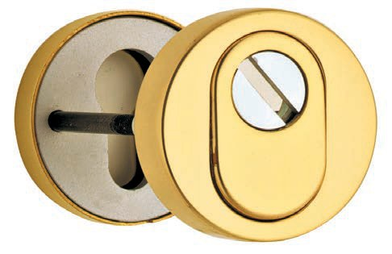

CREATURA
STV
13 / 16
Защита цилиндра

Defender
Броненакладки Art. 240 · 241 · 242 · 246
Броненакладки на цилиндр: закалённая сталь под латунной крышкой.
Регулировка
под выступ цилиндра 8–12 мм
Формы
круглая Ø 52 мм, квадратная 53 мм, овальная